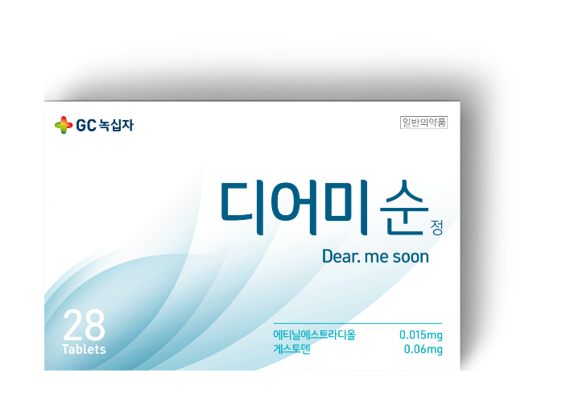
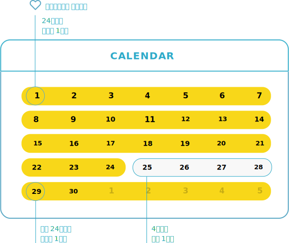
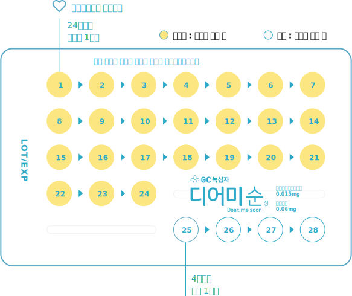
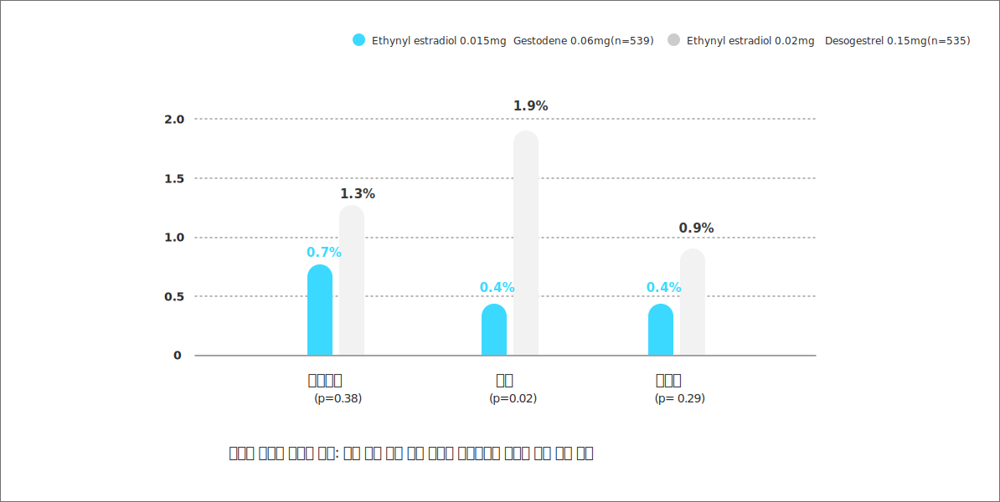
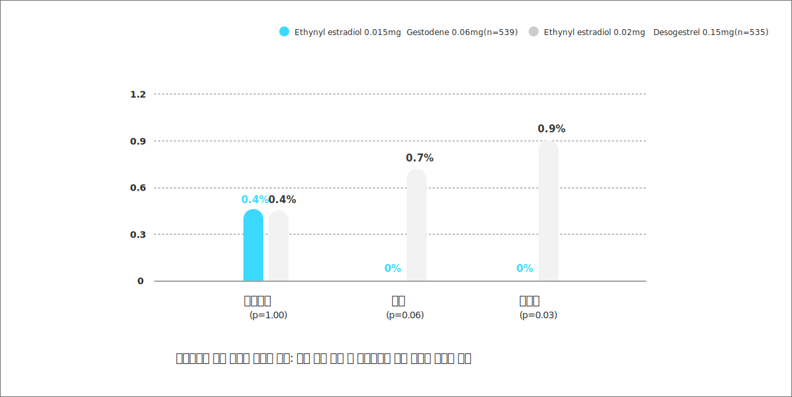

누구에게나
처음은 설레니까
처음이니까 순하게

scroll
디어미순의 특징을 알아보세요
국내 최저함량 디어미순을 소개합니다.

피임약이 처음이라면
피임약이 처음이라면
국내 최저함량 디어미순1
처음 피임약을 복용하시는 분이라면
국내 최저함량 디어미순으로 순하게 시작하세요
게스토덴1
0.06 mg (자사 0.075mg)에티닐 에스트라디올1
0.015 mg (자사 0.02mg)디어미순은 일반의약품 사전경구피임제 중 유일한 28정입니다.1
디어미순은 노란색 활성약을 24일간 복용한 후
이어서 흰색 위약을 4일간 복용하므로 휴약기를 따로 셀 필요가 없습니다.


디어미순
순하니깐
디어미순은 부작용을 낮췄습니다.
디어미순은 에스트로겐 함량을 낮추어
구역, 구토, 유방압통, 복부 통증 등의 부작용이 적게 나타났습니다.
- 심각한 정도의 부작용 비율
- 부작용으로 인해 복용을 중단한 비율


1. 식약처.피임약 복약지도(약사용).2016.
2. The European Journal of Contraception and Reproductive Health Care 1999;4 (Suppl 2) : 17-25